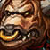
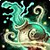
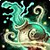

About Equinox
Hello, my name is Equinox. I'm just someone who loves keys and being competitive! I've played Brewmaster (BRM) since BFA, and I've been a top 10 Brewmaster ever since Shadowlands. I decided that I wanted to write a guide about how I view Brewmaster in Mythic+ and share some things that I've learned over the course of the past three expansions. I hope you enjoy it, and let me know if there's anything you'd like me to include.
Strengths and Weaknesses
Brewmaster monk has a variety of strengths and weaknesses. What are the primary ones?
Strengths
- High damage.
- Short cooldown absorb shield (good for dealing with tank busters).
- Large array of defensive options for tank busters.
- Strong passive mitigation and ability to cheese mechanics like E.D.N.A's Seismic Smash in The Stonevault (more covered in Dungeons).
Weaknesses
- No utility to help group live during hard bosses.
Race Selection
Both factions have very competitive races for Brewmaster in the Mythic+ Scene. Keep in mind, however, that the race you choose makes a very small difference until an extremely high level.
Horde
Vulpera
Vulpera is the best race you could choose on the Horde. They offer strong damage reducton, along with a single target/group heal (Bag of Tricks).
Alliance
Dwarf
Dwarf is the strongest defensive race you can choose in the game. Dwarf's racial (Stoneform) allows you to remove a multitude of debuffs on yourself, along with a 10% damage reduction for 8 seconds (more covered in the advanced section of the guide).
Ability Breakdown
If you aren't new to Brewmaster, I highly recommend that you skip this. I'll be covering your basic abilities that are important to you and that won't be covered in the advanced section.
Important Passives


Stagger
This passive is what makes Brewmaster unique. It causes you to take all damage over a delayed period of time based off of your agility (more covered in talents).
Important Defensive Abilities


 

Expel Harm
This ability is one of your primary ways to pull in all of your Gift of the Ox orbs. If you have enough critical strike, it can also be a strong heal with no Gift of the Ox orbs (more covered in talents).
Important Offensive Abilities


Rising Sun Kick
This is your highest single target damage ability and a good filler option in AoE when you don't want to spend energy on a global cooldown.
Recommended Addons
Interface customization is a very important part of World of Warcraft. This section gives a list of addons that I would consider "required" for any level of raid and mythic+. I will also provide import links for certain addons, and a list of all of my recommended weakauras.
- BigWigs / LittleWigs - Displays timers for boss and trash mechanics in raid and mythic+.
- Details! Damager Meter - Can display a ton of information like damage, healing, interrupts, etc. for you and your party.
- Mythic Dungeon Tools - An important routing tool for mythic+. You can import the routes from the Dungeons section of the guide.
- OmniCD - Displays your party members' important cooldowns, so you can track when certain abilities are available. You can import my profile from here.
- Plater Nameplates - An extremely important addon that makes holding threat and interrupting mobs easier. You can import my profile from here.
- Raider.IO - A necessary addon for any player. This addon displays players' raid bosses killed and mythic+ score.
- WeakAuras - An addon that allows you to create "mini addons." You can use this to majorly edit your game and interface. You can get a list of my recommended weakauras here.